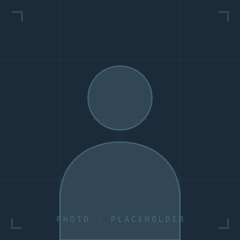

The Principals · Senior counsel · Founder-led
HIMARK is led by senior principals who personally anchor every mandate. There are no junior accounts. The principal who reads your application is the principal who runs your engagement.
The Operators
HIMARK is a deliberately small team of operators with deep institutional experience. Every principal has personally led commercial transformations at scale.

Founder of HIMARK Strategic Growth Consulting. Operates across commercial strategy, brand architecture, and AI integration for founder-led businesses pursuing premium-tier market positions.
[ Past Role · Firm ] · [ Past Role · Firm ] · [ Past Role · Firm ]
[ N ]+ years across strategic operations, brand, and growth infrastructure.
Leads brand positioning, market communication, and demand architecture across HIMARK Strategic Growth Consulting. Specialises in premium-tier market entry.
[ Past Role · Firm ] · [ Past Role · Firm ] · [ Past Role · Firm ]
[ N ]+ years across brand architecture, positioning, and demand strategy for premium-tier markets.
Architects operational delivery across all engagements. Oversees the technology stack, client onboarding rigour, and the institutional standard of HIMARK output.
[ Past Role · Firm ] · [ Past Role · Firm ] · [ Past Role · Firm ]
[ N ]+ years architecting operational delivery, client engagement protocol, and institutional output standards.
Owns the firm's technology architecture — from AI infrastructure to the data platforms underpinning every client engagement. Engineers the systems that make precision repeatable.
[ Past Role · Firm ] · [ Past Role · Firm ] · [ Past Role · Firm ]
[ N ]+ years engineering AI infrastructure, data platforms, and engagement automation systems.
Interactive map
Four principals. Distinct surfaces. Overlapping mandate. Hover any node to see what that principal carries — and the doctrine they operate by.
Principal
Founder & Chief Executive
Operates across commercial strategy, brand architecture, and AI integration for founder-led businesses pursuing premium-tier market positions. Personally leads Tier 03 Private Partner engagements.
Operating doctrine
Clarity precedes scale. Volume is a tax on quality. Engagements are earned — not won.
Domains
Strategy · AI Integration · Founder Office · Tier 03 Lead
Mandate
Anchors Private Partner mandates. Direct line for executive-level engagements.
"Every engagement carries a principal's name. There is no team behind the team. The work that leaves this firm is the work the principals signed."
Ask about engagement or how to apply.